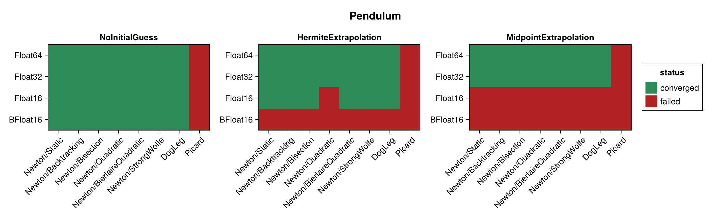
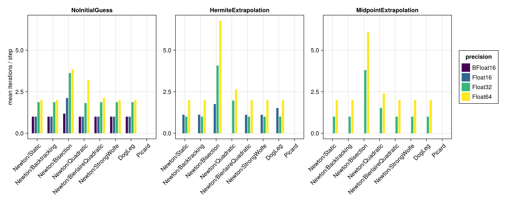
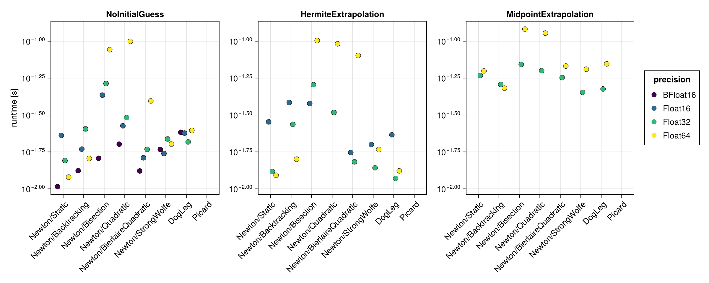
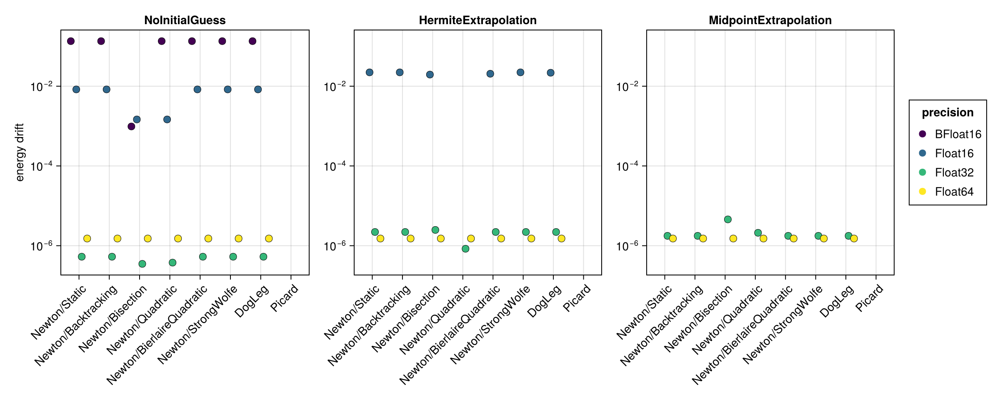
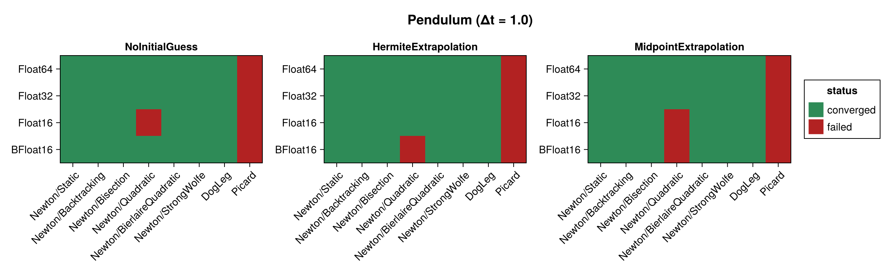
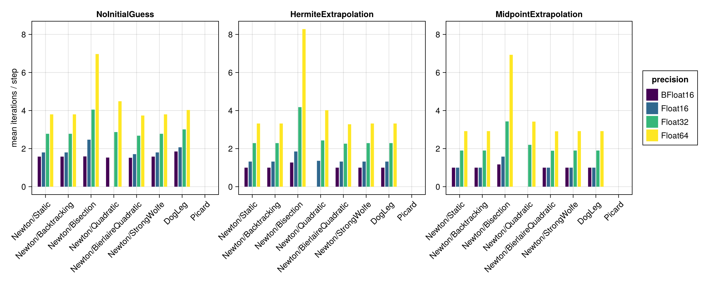
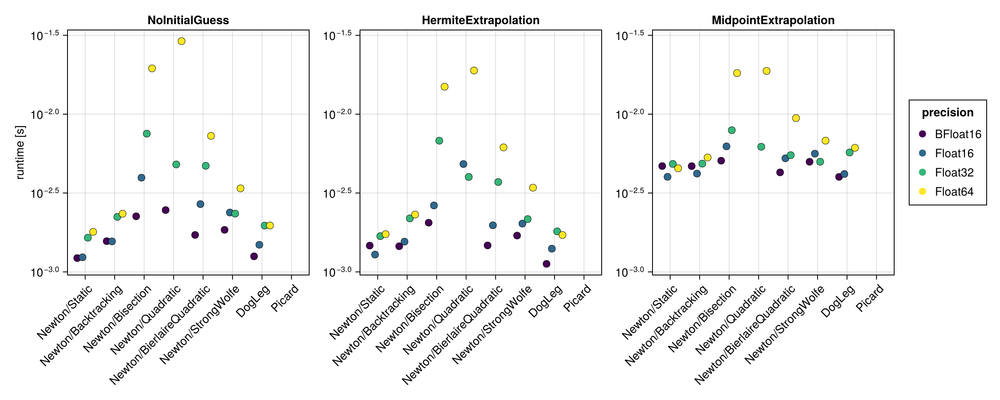
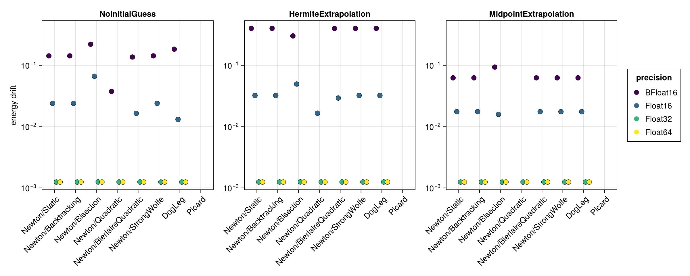

Pendulum
The mathematical pendulum ($\ddot{q} = -\sin q$) is nonlinear, so the implicit midpoint equations require genuine nonlinear iterations at every time step. This example therefore differentiates the solvers and line searches more strongly than the Harmonic Oscillator.
The benchmark below is regenerated at documentation build time with a single, fast timing pass. See the driver script scripts/midpoint_pendulum.jl for accurate BenchmarkTools measurements. The results are shown first for the standard step $\Delta t = 0.1$ and then repeated for a coarse step $\Delta t = 1.0$ (see Coarse time step (Δt = 1.0)).
using SolverBenchmark
spec = pendulum_spec(timespan = (0.0, 100.0), timestep = 0.1)
df = cached_sweep("pendulum_dt0.1") do
run_benchmark(spec; timing = :quick, verbose = false, quiet = true)
endConvergence
plot_convergence(df; title = "Pendulum")
Nonlinear iterations
Mean number of nonlinear-solver iterations per time step (converged runs only):
plot_iterations(df)
Run time
plot_runtime(df)
Energy drift
Drift of the conserved energy $H = p^2/(2ml^2) + m g l \cos q$:
plot_energy_drift(df)
Discussion
- The problem is nonlinear, so Newton needs genuine iterations — about 2 per step at
Float64withΔt = 0.1. The robust line searches (Static,Backtracking,Bisection,StrongWolfe) andDogLegagain behave almost identically, so in this mildly nonlinear regime the line search barely affects the iteration count. - Every configuration converges at
Float16and above — 72 of the 96 runs.Newton/Quadraticconverges throughout, as it does on the Harmonic Oscillator. BFloat16converges only withNoInitialGuess(8/24). As for the Harmonic Oscillator, this is theBFloat16time grid rather than the solver: at $\Delta t = 0.1$ over $(0, 100)$ consecutive times collide, and the extrapolating initial guesses cannot difference them. At the coarse step it recovers to 23/24.Picardneeds roughly 8 iterations per step and is, as for the harmonic oscillator, the most sensitive to the initial guess (MidpointExtrapolationfewest,NoInitialGuessmost).- Energy drift scales with precision just as for the Harmonic Oscillator.
Results table
markdown_table(summary_table(df))| precision | solver_label | initial_guess | converged | iterations_mean | runtime_s | max_residual | at_tolerance | energy_drift |
|---|---|---|---|---|---|---|---|---|
| BFloat16 | Newton/Static | NoInitialGuess | ✓ | 1 | 0.0103 | 0.0166 | ✓ | 0.135 |
| BFloat16 | Newton/Static | HermiteExtrapolation | ✗ | — | — | — | ✗ | — |
| BFloat16 | Newton/Static | MidpointExtrapolation | ✗ | — | — | — | ✗ | — |
| BFloat16 | Newton/Backtracking | NoInitialGuess | ✓ | 1 | 0.0133 | 0.0166 | ✓ | 0.135 |
| BFloat16 | Newton/Backtracking | HermiteExtrapolation | ✗ | — | — | — | ✗ | — |
| BFloat16 | Newton/Backtracking | MidpointExtrapolation | ✗ | — | — | — | ✗ | — |
| BFloat16 | Newton/Bisection | NoInitialGuess | ✓ | 1.18 | 0.0161 | 0.061 | ✓ | 0.000977 |
| BFloat16 | Newton/Bisection | HermiteExtrapolation | ✗ | — | — | — | ✗ | — |
| BFloat16 | Newton/Bisection | MidpointExtrapolation | ✗ | — | — | — | ✗ | — |
| BFloat16 | Newton/Quadratic | NoInitialGuess | ✓ | 1 | 0.0201 | 0.0166 | ✓ | 0.135 |
| BFloat16 | Newton/Quadratic | HermiteExtrapolation | ✗ | — | — | — | ✗ | — |
| BFloat16 | Newton/Quadratic | MidpointExtrapolation | ✗ | — | — | — | ✗ | — |
| BFloat16 | Newton/BierlaireQuadratic | NoInitialGuess | ✓ | 1 | 0.0132 | 0.0166 | ✓ | 0.135 |
| BFloat16 | Newton/BierlaireQuadratic | HermiteExtrapolation | ✗ | — | — | — | ✗ | — |
| BFloat16 | Newton/BierlaireQuadratic | MidpointExtrapolation | ✗ | — | — | — | ✗ | — |
| BFloat16 | Newton/StrongWolfe | NoInitialGuess | ✓ | 1 | 0.0185 | 0.0166 | ✓ | 0.135 |
| BFloat16 | Newton/StrongWolfe | HermiteExtrapolation | ✗ | — | — | — | ✗ | — |
| BFloat16 | Newton/StrongWolfe | MidpointExtrapolation | ✗ | — | — | — | ✗ | — |
| BFloat16 | DogLeg | NoInitialGuess | ✓ | 1 | 0.0242 | 0.0166 | ✓ | 0.135 |
| BFloat16 | DogLeg | HermiteExtrapolation | ✗ | — | — | — | ✗ | — |
| BFloat16 | DogLeg | MidpointExtrapolation | ✗ | — | — | — | ✗ | — |
| BFloat16 | Picard | NoInitialGuess | ✗ | 2.05 | 0.0321 | 1.34 | ✗ | — |
| BFloat16 | Picard | HermiteExtrapolation | ✗ | — | — | — | ✗ | — |
| BFloat16 | Picard | MidpointExtrapolation | ✗ | — | — | — | ✗ | — |
| Float16 | Newton/Static | NoInitialGuess | ✓ | 1 | 0.023 | 0.00216 | ✓ | 0.0083 |
| Float16 | Newton/Static | HermiteExtrapolation | ✓ | 1.12 | 0.0284 | 0.0069 | ✓ | 0.0222 |
| Float16 | Newton/Static | MidpointExtrapolation | ✗ | — | — | — | ✗ | — |
| Float16 | Newton/Backtracking | NoInitialGuess | ✓ | 1 | 0.0186 | 0.00216 | ✓ | 0.0083 |
| Float16 | Newton/Backtracking | HermiteExtrapolation | ✓ | 1.12 | 0.0384 | 0.0069 | ✓ | 0.0222 |
| Float16 | Newton/Backtracking | MidpointExtrapolation | ✗ | — | — | — | ✗ | — |
| Float16 | Newton/Bisection | NoInitialGuess | ✓ | 2.12 | 0.0431 | 0.00763 | ✓ | 0.00146 |
| Float16 | Newton/Bisection | HermiteExtrapolation | ✓ | 1.76 | 0.0378 | 0.00776 | ✓ | 0.0195 |
| Float16 | Newton/Bisection | MidpointExtrapolation | ✗ | — | — | — | ✗ | — |
| Float16 | Newton/Quadratic | NoInitialGuess | ✓ | 1 | 0.0267 | 0.00356 | ✓ | 0.00146 |
| Float16 | Newton/Quadratic | HermiteExtrapolation | ✗ | 1.11 | 0.047 | 0.0618 | ✗ | — |
| Float16 | Newton/Quadratic | MidpointExtrapolation | ✗ | — | — | — | ✗ | — |
| Float16 | Newton/BierlaireQuadratic | NoInitialGuess | ✓ | 1 | 0.0162 | 0.00216 | ✓ | 0.0083 |
| Float16 | Newton/BierlaireQuadratic | HermiteExtrapolation | ✓ | 1.11 | 0.0176 | 0.00756 | ✓ | 0.0205 |
| Float16 | Newton/BierlaireQuadratic | MidpointExtrapolation | ✗ | — | — | — | ✗ | — |
| Float16 | Newton/StrongWolfe | NoInitialGuess | ✓ | 1 | 0.0173 | 0.00216 | ✓ | 0.0083 |
| Float16 | Newton/StrongWolfe | HermiteExtrapolation | ✓ | 1.12 | 0.0199 | 0.0069 | ✓ | 0.0222 |
| Float16 | Newton/StrongWolfe | MidpointExtrapolation | ✗ | — | — | — | ✗ | — |
| Float16 | DogLeg | NoInitialGuess | ✓ | 1 | 0.0239 | 0.00216 | ✓ | 0.0083 |
| Float16 | DogLeg | HermiteExtrapolation | ✓ | 1.52 | 0.0232 | 0.00781 | ✓ | 0.0217 |
| Float16 | DogLeg | MidpointExtrapolation | ✗ | — | — | — | ✗ | — |
| Float16 | Picard | NoInitialGuess | ✗ | 2.05 | 0.033 | 0.962 | ✗ | — |
| Float16 | Picard | HermiteExtrapolation | ✗ | 2 | 0.0219 | 30.4 | ✗ | — |
| Float16 | Picard | MidpointExtrapolation | ✗ | — | — | — | ✗ | — |
| Float32 | Newton/Static | NoInitialGuess | ✓ | 1.87 | 0.0155 | 9.32e-07 | ✓ | 5.29e-07 |
| Float32 | Newton/Static | HermiteExtrapolation | ✓ | 1 | 0.0131 | 2.46e-07 | ✓ | 2.21e-06 |
| Float32 | Newton/Static | MidpointExtrapolation | ✓ | 1 | 0.0586 | 2.98e-07 | ✓ | 1.77e-06 |
| Float32 | Newton/Backtracking | NoInitialGuess | ✓ | 1.87 | 0.0254 | 9.32e-07 | ✓ | 5.29e-07 |
| Float32 | Newton/Backtracking | HermiteExtrapolation | ✓ | 1 | 0.0274 | 2.46e-07 | ✓ | 2.21e-06 |
| Float32 | Newton/Backtracking | MidpointExtrapolation | ✓ | 1 | 0.0509 | 2.98e-07 | ✓ | 1.77e-06 |
| Float32 | Newton/Bisection | NoInitialGuess | ✓ | 3.63 | 0.0517 | 9.54e-07 | ✓ | 3.5e-07 |
| Float32 | Newton/Bisection | HermiteExtrapolation | ✓ | 4.08 | 0.0507 | 9.54e-07 | ✓ | 2.48e-06 |
| Float32 | Newton/Bisection | MidpointExtrapolation | ✓ | 3.8 | 0.0697 | 9.54e-07 | ✓ | 4.56e-06 |
| Float32 | Newton/Quadratic | NoInitialGuess | ✓ | 1.82 | 0.0304 | 9.33e-07 | ✓ | 3.76e-07 |
| Float32 | Newton/Quadratic | HermiteExtrapolation | ✓ | 1.97 | 0.0329 | 7.37e-07 | ✓ | 8.38e-07 |
| Float32 | Newton/Quadratic | MidpointExtrapolation | ✓ | 1.53 | 0.0631 | 9.42e-07 | ✓ | 2.1e-06 |
| Float32 | Newton/BierlaireQuadratic | NoInitialGuess | ✓ | 1.87 | 0.0185 | 9.32e-07 | ✓ | 5.29e-07 |
| Float32 | Newton/BierlaireQuadratic | HermiteExtrapolation | ✓ | 1 | 0.0152 | 2.46e-07 | ✓ | 2.21e-06 |
| Float32 | Newton/BierlaireQuadratic | MidpointExtrapolation | ✓ | 1 | 0.0566 | 2.98e-07 | ✓ | 1.77e-06 |
| Float32 | Newton/StrongWolfe | NoInitialGuess | ✓ | 1.87 | 0.0218 | 9.32e-07 | ✓ | 5.29e-07 |
| Float32 | Newton/StrongWolfe | HermiteExtrapolation | ✓ | 1 | 0.0139 | 2.46e-07 | ✓ | 2.21e-06 |
| Float32 | Newton/StrongWolfe | MidpointExtrapolation | ✓ | 1 | 0.045 | 2.98e-07 | ✓ | 1.77e-06 |
| Float32 | DogLeg | NoInitialGuess | ✓ | 1.87 | 0.0208 | 9.32e-07 | ✓ | 5.29e-07 |
| Float32 | DogLeg | HermiteExtrapolation | ✓ | 1 | 0.0118 | 2.46e-07 | ✓ | 2.21e-06 |
| Float32 | DogLeg | MidpointExtrapolation | ✓ | 1 | 0.0475 | 2.98e-07 | ✓ | 1.77e-06 |
| Float32 | Picard | NoInitialGuess | ✗ | 2.05 | 0.0397 | 0.917 | ✗ | — |
| Float32 | Picard | HermiteExtrapolation | ✗ | 2 | 0.0314 | 0.00857 | ✗ | — |
| Float32 | Picard | MidpointExtrapolation | ✗ | 2 | 0.0637 | 0.00209 | ✗ | — |
| Float64 | Newton/Static | NoInitialGuess | ✓ | 2 | 0.012 | 6.75e-16 | ✓ | 1.51e-06 |
| Float64 | Newton/Static | HermiteExtrapolation | ✓ | 2 | 0.0124 | 4.97e-16 | ✓ | 1.51e-06 |
| Float64 | Newton/Static | MidpointExtrapolation | ✓ | 2 | 0.0629 | 4.97e-16 | ✓ | 1.51e-06 |
| Float64 | Newton/Backtracking | NoInitialGuess | ✓ | 2 | 0.0161 | 6.75e-16 | ✓ | 1.51e-06 |
| Float64 | Newton/Backtracking | HermiteExtrapolation | ✓ | 2 | 0.0159 | 4.97e-16 | ✓ | 1.51e-06 |
| Float64 | Newton/Backtracking | MidpointExtrapolation | ✓ | 2 | 0.0481 | 4.97e-16 | ✓ | 1.51e-06 |
| Float64 | Newton/Bisection | NoInitialGuess | ✓ | 3.84 | 0.0875 | 1.78e-15 | ✓ | 1.51e-06 |
| Float64 | Newton/Bisection | HermiteExtrapolation | ✓ | 6.77 | 0.101 | 1.76e-15 | ✓ | 1.51e-06 |
| Float64 | Newton/Bisection | MidpointExtrapolation | ✓ | 6.07 | 0.121 | 1.78e-15 | ✓ | 1.51e-06 |
| Float64 | Newton/Quadratic | NoInitialGuess | ✓ | 3.22 | 0.0999 | 1.65e-15 | ✓ | 1.51e-06 |
| Float64 | Newton/Quadratic | HermiteExtrapolation | ✓ | 2.65 | 0.096 | 1.72e-15 | ✓ | 1.51e-06 |
| Float64 | Newton/Quadratic | MidpointExtrapolation | ✓ | 2.4 | 0.113 | 1.74e-15 | ✓ | 1.51e-06 |
| Float64 | Newton/BierlaireQuadratic | NoInitialGuess | ✓ | 2.13 | 0.0394 | 1.68e-15 | ✓ | 1.51e-06 |
| Float64 | Newton/BierlaireQuadratic | HermiteExtrapolation | ✓ | 2 | 0.0801 | 1.22e-15 | ✓ | 1.51e-06 |
| Float64 | Newton/BierlaireQuadratic | MidpointExtrapolation | ✓ | 2 | 0.0678 | 4.97e-16 | ✓ | 1.51e-06 |
| Float64 | Newton/StrongWolfe | NoInitialGuess | ✓ | 2 | 0.0201 | 6.75e-16 | ✓ | 1.51e-06 |
| Float64 | Newton/StrongWolfe | HermiteExtrapolation | ✓ | 2 | 0.0185 | 4.97e-16 | ✓ | 1.51e-06 |
| Float64 | Newton/StrongWolfe | MidpointExtrapolation | ✓ | 2 | 0.0647 | 4.97e-16 | ✓ | 1.51e-06 |
| Float64 | DogLeg | NoInitialGuess | ✓ | 2 | 0.0249 | 6.75e-16 | ✓ | 1.51e-06 |
| Float64 | DogLeg | HermiteExtrapolation | ✓ | 2 | 0.0132 | 4.97e-16 | ✓ | 1.51e-06 |
| Float64 | DogLeg | MidpointExtrapolation | ✓ | 2 | 0.0702 | 4.97e-16 | ✓ | 1.51e-06 |
| Float64 | Picard | NoInitialGuess | ✗ | 2.05 | 0.0529 | 0.917 | ✗ | — |
| Float64 | Picard | HermiteExtrapolation | ✗ | 2 | 0.056 | 0.00812 | ✗ | — |
| Float64 | Picard | MidpointExtrapolation | ✗ | 2 | 0.082 | 0.00209 | ✗ | — |
Coarse time step (Δt = 1.0)
With a ten times larger step the equations become more strongly nonlinear, which stresses the solvers noticeably more than the $\Delta t = 0.1$ results above: Newton's iteration count rises to ≈ 3.3 per step and Picard needs ≈ 30. Every configuration still converges.
spec1 = pendulum_spec(timespan = (0.0, 100.0), timestep = 1.0)
df1 = cached_sweep("pendulum_dt1.0") do
run_benchmark(spec1; timing = :quick, verbose = false, quiet = true)
endConvergence
plot_convergence(df1; title = "Pendulum (Δt = 1.0)")
Nonlinear iterations
plot_iterations(df1)
Run time
plot_runtime(df1)
Energy drift
plot_energy_drift(df1)
Results table
markdown_table(summary_table(df1))| precision | solver_label | initial_guess | converged | iterations_mean | runtime_s | max_residual | at_tolerance | energy_drift |
|---|---|---|---|---|---|---|---|---|
| BFloat16 | Newton/Static | NoInitialGuess | ✓ | 1.58 | 0.00122 | 0.0625 | ✓ | 0.143 |
| BFloat16 | Newton/Static | HermiteExtrapolation | ✓ | 1 | 0.00147 | 0.0625 | ✓ | 0.401 |
| BFloat16 | Newton/Static | MidpointExtrapolation | ✓ | 1 | 0.00469 | 0.0156 | ✓ | 0.0625 |
| BFloat16 | Newton/Backtracking | NoInitialGuess | ✓ | 1.58 | 0.00157 | 0.0625 | ✓ | 0.143 |
| BFloat16 | Newton/Backtracking | HermiteExtrapolation | ✓ | 1 | 0.00145 | 0.0625 | ✓ | 0.401 |
| BFloat16 | Newton/Backtracking | MidpointExtrapolation | ✓ | 1 | 0.00468 | 0.0156 | ✓ | 0.0625 |
| BFloat16 | Newton/Bisection | NoInitialGuess | ✓ | 1.59 | 0.00225 | 0.0625 | ✓ | 0.221 |
| BFloat16 | Newton/Bisection | HermiteExtrapolation | ✓ | 1.27 | 0.00205 | 0.0625 | ✓ | 0.302 |
| BFloat16 | Newton/Bisection | MidpointExtrapolation | ✓ | 1.17 | 0.00507 | 0.0588 | ✓ | 0.0937 |
| BFloat16 | Newton/Quadratic | NoInitialGuess | ✓ | 1.53 | 0.00247 | 0.0625 | ✓ | 0.0376 |
| BFloat16 | Newton/Quadratic | HermiteExtrapolation | ✗ | 1.07 | 0.00187 | 0.609 | ✗ | — |
| BFloat16 | Newton/Quadratic | MidpointExtrapolation | ✗ | 1.04 | 0.00483 | 0.229 | ✗ | — |
| BFloat16 | Newton/BierlaireQuadratic | NoInitialGuess | ✓ | 1.52 | 0.00171 | 0.0581 | ✓ | 0.137 |
| BFloat16 | Newton/BierlaireQuadratic | HermiteExtrapolation | ✓ | 1 | 0.00147 | 0.0625 | ✓ | 0.401 |
| BFloat16 | Newton/BierlaireQuadratic | MidpointExtrapolation | ✓ | 1 | 0.00428 | 0.0156 | ✓ | 0.0625 |
| BFloat16 | Newton/StrongWolfe | NoInitialGuess | ✓ | 1.58 | 0.00185 | 0.0625 | ✓ | 0.143 |
| BFloat16 | Newton/StrongWolfe | HermiteExtrapolation | ✓ | 1 | 0.0017 | 0.0625 | ✓ | 0.401 |
| BFloat16 | Newton/StrongWolfe | MidpointExtrapolation | ✓ | 1 | 0.00499 | 0.0156 | ✓ | 0.0625 |
| BFloat16 | DogLeg | NoInitialGuess | ✓ | 1.85 | 0.00126 | 0.0625 | ✓ | 0.184 |
| BFloat16 | DogLeg | HermiteExtrapolation | ✓ | 1 | 0.00112 | 0.0625 | ✓ | 0.401 |
| BFloat16 | DogLeg | MidpointExtrapolation | ✓ | 1 | 0.004 | 0.0156 | ✓ | 0.0625 |
| BFloat16 | Picard | NoInitialGuess | ✗ | 2.99 | 0.00169 | 2.69 | ✗ | — |
| BFloat16 | Picard | HermiteExtrapolation | ✗ | 3.07 | 0.00204 | 26.6 | ✗ | — |
| BFloat16 | Picard | MidpointExtrapolation | ✗ | 1.67 | 0.00455 | 0.762 | ✗ | — |
| Float16 | Newton/Static | NoInitialGuess | ✓ | 1.8 | 0.00124 | 0.00751 | ✓ | 0.024 |
| Float16 | Newton/Static | HermiteExtrapolation | ✓ | 1.32 | 0.00129 | 0.00781 | ✓ | 0.0322 |
| Float16 | Newton/Static | MidpointExtrapolation | ✓ | 1 | 0.00401 | 0.00269 | ✓ | 0.0175 |
| Float16 | Newton/Backtracking | NoInitialGuess | ✓ | 1.8 | 0.00156 | 0.00751 | ✓ | 0.024 |
| Float16 | Newton/Backtracking | HermiteExtrapolation | ✓ | 1.32 | 0.00155 | 0.00781 | ✓ | 0.0322 |
| Float16 | Newton/Backtracking | MidpointExtrapolation | ✓ | 1 | 0.0042 | 0.00269 | ✓ | 0.0175 |
| Float16 | Newton/Bisection | NoInitialGuess | ✓ | 2.47 | 0.00396 | 0.00781 | ✓ | 0.0664 |
| Float16 | Newton/Bisection | HermiteExtrapolation | ✓ | 1.85 | 0.00264 | 0.00779 | ✓ | 0.0496 |
| Float16 | Newton/Bisection | MidpointExtrapolation | ✓ | 1.58 | 0.00625 | 0.00772 | ✓ | 0.0159 |
| Float16 | Newton/Quadratic | NoInitialGuess | ✗ | 1.71 | 0.00385 | 0.0642 | ✗ | — |
| Float16 | Newton/Quadratic | HermiteExtrapolation | ✓ | 1.36 | 0.00483 | 0.00772 | ✓ | 0.0166 |
| Float16 | Newton/Quadratic | MidpointExtrapolation | ✗ | 1.01 | 0.00607 | 0.0673 | ✗ | — |
| Float16 | Newton/BierlaireQuadratic | NoInitialGuess | ✓ | 1.71 | 0.00269 | 0.00764 | ✓ | 0.0165 |
| Float16 | Newton/BierlaireQuadratic | HermiteExtrapolation | ✓ | 1.32 | 0.00197 | 0.00732 | ✓ | 0.0293 |
| Float16 | Newton/BierlaireQuadratic | MidpointExtrapolation | ✓ | 1 | 0.00525 | 0.00269 | ✓ | 0.0175 |
| Float16 | Newton/StrongWolfe | NoInitialGuess | ✓ | 1.8 | 0.00238 | 0.00751 | ✓ | 0.024 |
| Float16 | Newton/StrongWolfe | HermiteExtrapolation | ✓ | 1.32 | 0.00202 | 0.00781 | ✓ | 0.0322 |
| Float16 | Newton/StrongWolfe | MidpointExtrapolation | ✓ | 1 | 0.00562 | 0.00269 | ✓ | 0.0175 |
| Float16 | DogLeg | NoInitialGuess | ✓ | 2.07 | 0.00149 | 0.00635 | ✓ | 0.0131 |
| Float16 | DogLeg | HermiteExtrapolation | ✓ | 1.32 | 0.0014 | 0.00781 | ✓ | 0.0322 |
| Float16 | DogLeg | MidpointExtrapolation | ✓ | 1 | 0.00418 | 0.00269 | ✓ | 0.0175 |
| Float16 | Picard | NoInitialGuess | ✗ | 2.49 | 0.00196 | 2.53 | ✗ | — |
| Float16 | Picard | HermiteExtrapolation | ✗ | 3.09 | 0.00256 | 27.1 | ✗ | — |
| Float16 | Picard | MidpointExtrapolation | ✗ | 1.97 | 0.00482 | 0.19 | ✗ | — |
| Float32 | Newton/Static | NoInitialGuess | ✓ | 2.78 | 0.00165 | 8.05e-07 | ✓ | 0.00125 |
| Float32 | Newton/Static | HermiteExtrapolation | ✓ | 2.29 | 0.00169 | 5.96e-07 | ✓ | 0.00125 |
| Float32 | Newton/Static | MidpointExtrapolation | ✓ | 1.9 | 0.00484 | 4.17e-07 | ✓ | 0.00125 |
| Float32 | Newton/Backtracking | NoInitialGuess | ✓ | 2.78 | 0.00223 | 8.05e-07 | ✓ | 0.00125 |
| Float32 | Newton/Backtracking | HermiteExtrapolation | ✓ | 2.29 | 0.00218 | 5.96e-07 | ✓ | 0.00125 |
| Float32 | Newton/Backtracking | MidpointExtrapolation | ✓ | 1.9 | 0.00486 | 4.17e-07 | ✓ | 0.00125 |
| Float32 | Newton/Bisection | NoInitialGuess | ✓ | 4.05 | 0.00752 | 9.24e-07 | ✓ | 0.00125 |
| Float32 | Newton/Bisection | HermiteExtrapolation | ✓ | 4.18 | 0.00679 | 9.33e-07 | ✓ | 0.00125 |
| Float32 | Newton/Bisection | MidpointExtrapolation | ✓ | 3.43 | 0.00791 | 9.42e-07 | ✓ | 0.00125 |
| Float32 | Newton/Quadratic | NoInitialGuess | ✓ | 2.87 | 0.0048 | 5.09e-07 | ✓ | 0.00125 |
| Float32 | Newton/Quadratic | HermiteExtrapolation | ✓ | 2.43 | 0.004 | 7.47e-07 | ✓ | 0.00125 |
| Float32 | Newton/Quadratic | MidpointExtrapolation | ✓ | 2.2 | 0.00621 | 9.24e-07 | ✓ | 0.00125 |
| Float32 | Newton/BierlaireQuadratic | NoInitialGuess | ✓ | 2.68 | 0.0047 | 7.15e-07 | ✓ | 0.00125 |
| Float32 | Newton/BierlaireQuadratic | HermiteExtrapolation | ✓ | 2.26 | 0.00371 | 7.15e-07 | ✓ | 0.00125 |
| Float32 | Newton/BierlaireQuadratic | MidpointExtrapolation | ✓ | 1.89 | 0.0055 | 9.24e-07 | ✓ | 0.00125 |
| Float32 | Newton/StrongWolfe | NoInitialGuess | ✓ | 2.78 | 0.00234 | 8.05e-07 | ✓ | 0.00125 |
| Float32 | Newton/StrongWolfe | HermiteExtrapolation | ✓ | 2.29 | 0.00216 | 5.96e-07 | ✓ | 0.00125 |
| Float32 | Newton/StrongWolfe | MidpointExtrapolation | ✓ | 1.9 | 0.00499 | 4.17e-07 | ✓ | 0.00125 |
| Float32 | DogLeg | NoInitialGuess | ✓ | 3.01 | 0.00197 | 6.08e-07 | ✓ | 0.00125 |
| Float32 | DogLeg | HermiteExtrapolation | ✓ | 2.29 | 0.00181 | 5.96e-07 | ✓ | 0.00125 |
| Float32 | DogLeg | MidpointExtrapolation | ✓ | 1.9 | 0.00572 | 4.17e-07 | ✓ | 0.00125 |
| Float32 | Picard | NoInitialGuess | ✗ | 2.52 | 0.00475 | 2.52 | ✗ | — |
| Float32 | Picard | HermiteExtrapolation | ✗ | 2.98 | 0.0054 | 20.2 | ✗ | — |
| Float32 | Picard | MidpointExtrapolation | ✗ | 2.02 | 0.00695 | 0.187 | ✗ | — |
| Float64 | Newton/Static | NoInitialGuess | ✓ | 3.8 | 0.00179 | 1.47e-15 | ✓ | 0.00125 |
| Float64 | Newton/Static | HermiteExtrapolation | ✓ | 3.32 | 0.00173 | 1.74e-15 | ✓ | 0.00125 |
| Float64 | Newton/Static | MidpointExtrapolation | ✓ | 2.92 | 0.00454 | 5.55e-16 | ✓ | 0.00125 |
| Float64 | Newton/Backtracking | NoInitialGuess | ✓ | 3.8 | 0.00234 | 1.47e-15 | ✓ | 0.00125 |
| Float64 | Newton/Backtracking | HermiteExtrapolation | ✓ | 3.32 | 0.00231 | 1.74e-15 | ✓ | 0.00125 |
| Float64 | Newton/Backtracking | MidpointExtrapolation | ✓ | 2.92 | 0.00531 | 5.55e-16 | ✓ | 0.00125 |
| Float64 | Newton/Bisection | NoInitialGuess | ✓ | 6.97 | 0.0195 | 1.68e-15 | ✓ | 0.00125 |
| Float64 | Newton/Bisection | HermiteExtrapolation | ✓ | 8.28 | 0.0149 | 1.78e-15 | ✓ | 0.00125 |
| Float64 | Newton/Bisection | MidpointExtrapolation | ✓ | 6.93 | 0.0182 | 1.78e-15 | ✓ | 0.00125 |
| Float64 | Newton/Quadratic | NoInitialGuess | ✓ | 4.49 | 0.029 | 1.57e-15 | ✓ | 0.00125 |
| Float64 | Newton/Quadratic | HermiteExtrapolation | ✓ | 4.02 | 0.0189 | 1.34e-15 | ✓ | 0.00125 |
| Float64 | Newton/Quadratic | MidpointExtrapolation | ✓ | 3.42 | 0.0188 | 1.74e-15 | ✓ | 0.00125 |
| Float64 | Newton/BierlaireQuadratic | NoInitialGuess | ✓ | 3.74 | 0.00728 | 1.78e-15 | ✓ | 0.00125 |
| Float64 | Newton/BierlaireQuadratic | HermiteExtrapolation | ✓ | 3.28 | 0.00615 | 5.55e-16 | ✓ | 0.00125 |
| Float64 | Newton/BierlaireQuadratic | MidpointExtrapolation | ✓ | 2.91 | 0.00945 | 1.45e-15 | ✓ | 0.00125 |
| Float64 | Newton/StrongWolfe | NoInitialGuess | ✓ | 3.8 | 0.00339 | 1.47e-15 | ✓ | 0.00125 |
| Float64 | Newton/StrongWolfe | HermiteExtrapolation | ✓ | 3.32 | 0.00342 | 1.74e-15 | ✓ | 0.00125 |
| Float64 | Newton/StrongWolfe | MidpointExtrapolation | ✓ | 2.92 | 0.00679 | 5.55e-16 | ✓ | 0.00125 |
| Float64 | DogLeg | NoInitialGuess | ✓ | 4.03 | 0.00197 | 1.47e-15 | ✓ | 0.00125 |
| Float64 | DogLeg | HermiteExtrapolation | ✓ | 3.32 | 0.00171 | 1.74e-15 | ✓ | 0.00125 |
| Float64 | DogLeg | MidpointExtrapolation | ✓ | 2.92 | 0.00612 | 5.55e-16 | ✓ | 0.00125 |
| Float64 | Picard | NoInitialGuess | ✗ | 2.5 | 0.00611 | 2.52 | ✗ | — |
| Float64 | Picard | HermiteExtrapolation | ✗ | 2.5 | 0.00642 | 25 | ✗ | — |
| Float64 | Picard | MidpointExtrapolation | ✗ | 2.03 | 0.00931 | 0.187 | ✗ | — |